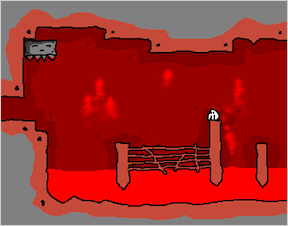
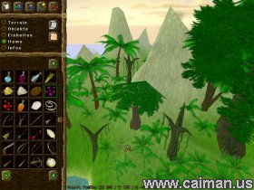
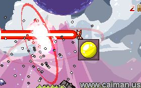
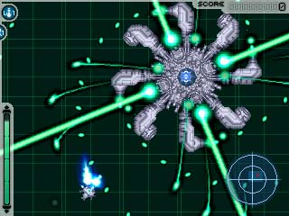

http://numa.notdot.net/map/14396 My first submission to TOLODC It has alot of load time because of gold. I hope I didnt submit it too late.
I have a similar problem, Whenever I play the sound suddenly cuts off then plays all the sounds at once a few seconds later...
Hehe this is what you get at 3am in the morning, talk about goverment... ahh.
Well, would you notice most of the people supporting the idea already are elligable for the elite or expert status? I also only have one problem with that, Im not a very good map maker but I enjoy rating and commenting on maps, That is kind of unfair to users who want to contribute a rate or comment.
If I had my choice I would do these (in order) : F E H G
L.A. Yay!
If you had 20 dollars, what would you buy?
If you had 20 dollars, what would you buy?
Radio Sweep!
N
or
Any other game in the world
N
or
Any other game in the world
Dr. Tetris,
Mr friend that got killed by a snake also has died, And was baried in a local cementary. It has a very nice tombstone above his grave, and I feel bad for this, but every time I go there I have a strong urge to steal his tombstone and others. What should I do?
Mr friend that got killed by a snake also has died, And was baried in a local cementary. It has a very nice tombstone above his grave, and I feel bad for this, but every time I go there I have a strong urge to steal his tombstone and others. What should I do?
Clay is teh rockorz!!1!oneeleventshwan!!!!!
Chicken
or
Beef?
Chicken
or
Beef?
Meatloaf! Meatloaf rocks with a little ketchup
That jared actually lost weight on the subways diet
nyquil tottaly.
Spanish
or
French
Spanish
or
French
This has been suggested before
*stands back and watchs the flames*
*stands back and watchs the flames*
I'd be all of them 'cause they're cool.
If you could be a enemy in maple story, which would it be?
If you could be a enemy in maple story, which would it be?
^ Has a evil Xbox sig
^ doesnt have a name, just a number
I dont belive that reality exist
[sarcasm]Wow, thats amazing, just amazing [/sarcasm]
To have your stomach punctured and slowly die from the inside due to stomach acids
I cant belive its not butter!
^ has a very pixely avatar
Peas
Hamburgers or tacos?
Hamburgers or tacos?
^Likes to do suicide on mines and likes to jump from high places
Pfft it a person from Maplstory
Pfft it a person from Maplstory
QuoteKablizzy's Edit: Nuh-uh.
^ Probbaly doesnt know who I am either 0_o
(dont know you xD)
(dont know you xD)
Buttered! *Butters self* Well erm, yea
Math
Or
Science
Math
Or
Science
^ is trying to get me to say Knows that I know that I don't know who he is
^ Has figured out half of the master plan
^^ Still is clueless
^ Now knows the master plan
^ Now knows the master plan
Cool levels. *Has a new sig thanks to RR*
^ Has figured out part of another plan tottaly unrelated. No, I still wont let you in it.
^ Avatar represents some of my life
Has more post than me :'(
8/10 has poptarts... MMmmm poptarts
I havnt been to a graveyard lately, thanks.
But now I have another problem, every since ive stopped going to the graveyard I.. I seem to see familer faces in the corner of my eye, or started to notice them,but when I look, it turns out tp be a object, or just air. Is there something wrong with me?
But now I have another problem, every since ive stopped going to the graveyard I.. I seem to see familer faces in the corner of my eye, or started to notice them,but when I look, it turns out tp be a object, or just air. Is there something wrong with me?
Worst way to die
Getting strapped to a chair and force fed for years untill death.
Getting strapped to a chair and force fed for years untill death.
Lucidium prove this then.
I cant belive how it has that light, crisp, buttwery taste without the fat and is not butter! prove that
I cant belive how it has that light, crisp, buttwery taste without the fat and is not butter! prove that
Omg... My friend, a video game addict fell into a coma while we were playing a video game a while ago.. We took him to a hospital a while ago. Any advice?
Congradulations! *drinks to that*
^ name starts with a jf that looks like John F kenedy
^ was just handed a 20 and made Blazeraid go emoticon crazy 
How about get stuck on a plastic soda can holder thingy in the ocean and the drown and sink to bottem as the dolphins laugh?
5/10 crazy X box user 
^ Likes to learn how to fly
^ uses ebil firefox and doesnt know the plan..
^ doesnt know Im using oprah, shes soo sexy.
Hello all! Im sorta newish to the N (one month) and havnt really introduced myself, so Hola every!
Ergh.. this is embarrasing but... My ass is bleeding, should I be concerned?
 Nothing to see here
Nothing to see here Well heres the problem, some newbs or noobs dont like to be givin help or advice, and sometimes people are scared to because most of the noobs or newbs will rate all of your maps down if you say something, or rate them bad. That is why there ar more comments and such on good maps than bad.
*goes to buy a copy*
Is my avatar working? It keeps switching sometimes, It should be the Naruto ninja guy..
How bout now?
^ makes awesome maps
I see what he means, ducking to maybe increase fall rate or go under thwumps, drones ext and climbing do you can go up a wall with mines near it.
Edit: Heh ducking not sucking
Edit: Heh ducking not sucking
^ apparently likes TNT
^ avatar now looks waayyyy better
Ergh.. Jus turn off screensaver timer and leave the main menu on. Turn sounds off if youd like. its that easy
^ Like to erm, zap people
^ is a lol stupid noob
^ sig looks very violent...
Cool, all of these maps are awesome, I liked manta ray...
How about
Big air, fast paced mine jumper or normal jumper.
Big air, fast paced mine jumper or normal jumper.
Perhaps you Naned the launch pad, Although I dont know how you did in userlevels...
Dont, pfft xplode *Cracks up*
 Lol 1st try.
Lol 1st try. Hehe I keep dieing on 0-1 Stupid gravity...
^ should stop eating sugar
^ has figured out part elevenity of my master plan
*Cant climb it* *Faints*
Well, most Newbs act as n00bs for a while, some get better, but the rest stay Noobs
No, should I know what that-thing-that-Ianb-said-on-the-1rst-page-thing was?
Mark, you could use your search thing on your comp to look for it, but this sounds eaiser. Hooray laziness
that-thing-that-Ianb-said-on-the-1rst-page-thingWas I doing the right thing when I reffered to the thing bout the thingimugugu in my last post? If so, are those guys really dead?
Boss mode cuts down on CPU ussage
It was also the day maestro put on his wig.
Quote* You are now known as [7654321]
* You are now known as GamingWolf
* You are now known as TS
* You are now known as Linus
* You are now known as Nevermore
* You are now known as maestro
* You are now known as blue_tetris
* You are now known as trib4l
* You are now known as maestro
* You are now known as johnny_faneca
* You are now known as maestro
* You are now known as raigan
* You are now known as maestro
*gasp* No dressing up as mare? shame on you. Also, no dressing up as me ='( shame on you.
Do I give the impression I am a woman, is that a insult, or am I just slow?
Well... there is a level editor in the newest versions.... *steps a couple steps back* *gets a good seat for flame war* *Watches*
Nope.
Would ruin Ns Simplicity...
Would ruin Ns Simplicity...
Aye
Hmm itd be bad if "god" messed up our flesh codes...
Dont want to give it away? then you have 3 choices
1. Sell it on ebay
2. fill it with coke and sell it on the black market or
3. use it to hide your coke
1. Sell it on ebay
2. fill it with coke and sell it on the black market or
3. use it to hide your coke
My lifespan
Granted, you die of Aides 2 days later
I wish everyone exept me died
I wish everyone exept me died
Aren't you supposed to know that?
Cheers! happy 100000
Oops, that was me.
Granted but the Bush killed you before you got to use it
I wish for pie, lots and lots of pie.
I wish for pie, lots and lots of pie.
*raises hand frantically* Me Me ME!!! I dont know about false tiles either...
http://numa.notdot.net/map/17516 Heres your wish 
Its not exactly what you want but hey, its close enough
Its not exactly what you want but hey, its close enough
Accept me, Wheeeeeeeeeeeeeeeeeeeeeeeeeeeeeeeeeeee
Quote-!- Blazeraid is now known as meastro
* maestro kicks meastro.
* meastro kicks maestro
* maestro kicks meastro.
* meastro kicks maestro
* maestro kicks meastro.
* meastro kicks maestro
* maestro kicks meastro.
* meastro Punches maestro very hard.
* maestro punches meastro very hard.
-!- Niccus is now known as masetro
* meastro kills maestro
* Kablizzy shakes his head.
< maestro> oh man.
* meastro hides
< maestro> I must defend my name!
* maestro screams!
* meastro NinjaMeastro!!!
-!- meastro is now known as NinjaMeastro
< masetro> ...that was stupid
* maestro unleashes flailing fists of doom.
* maestro kills masetro]
< masetro> ow.
* maestro kills NinjaMeastro.
< maestro> Yeeeeeeeeaaaaaaaah!
* NinjaMeastro comes out of shadow and kill maestro
-!- NinjaMeastro is now known as meastro
< maestro> You're dead. NM.
-!- masetro is now known as Niccus
< meastro> Im dead nevermore?
* meastro punches maestro is eye
< meastro> FATILITY!
< maestro> NinjaMeastro.
< maestro> And you're dead.
Hooray epic fight scenes
Yea, cool trick.. very useful
The Incredibles
... Have you ever thought that maybe they just didnt like your maps? Its not as if you have to vote the same as everyone else. Its pretty much a matter of opinion, some people love jumpers, some despise them. Some like races, others hate. Just dont let it affect you.. And also, since a snipe can't actually be defined, Arachnid cant ban anyone for that offence...
http://translate.google.com/translate?u=ht...n&hl=en&ie=UTF8 Here is the trancslated page, thanks to google, his post are now readable
너에는 모자 자물쇠가 위에 있다?
너에는 모자 자물쇠가 위에 있다?
http://numa.notdot.net/map/18799 Yep, heres mine...
TDL I wonder where my papers went... Seriously that looks just like my work...
40/100 meh, I guess im not around much
^ Is teh flash (er)
My guess is you typed a letter into the tile data and had too many or few tile data bits...
75/100 Made some good maps, erm, and I havn't seen him do anything yet..
Well actually, applying the ninjas physics to two ninjas
Wedgie, you probbaly do, for I am god, ruler over all... part of my computer...
60/100 I dont like his sig =(
60/100 I dont like his sig =(
Awh, that sucks, well atleast your back. But thats being selfish I suppose. Hope your life turns around soon.
Monkey monkey, on the wall, where did I put my f****** car keys?
Monkey Monkey, on teh wall, who is going wheeeeeeeeeeeeeeeeeeeeeeeeeeeeeeeeeeeeeeeeeeeee downstaires and wont stfu?
Trying out my bot
Monkey Monkey, on teh wall, who is going wheeeeeeeeeeeeeeeeeeeeeeeeeeeeeeeeeeeeeeeeeeeee downstaires and wont stfu?
Trying out my bot
Sound aight, Ill take 1, -2
Umm... 2 one ways facingeach other is.... its bassicly a, mine in most cases, minus a pixel it protects... WHo knows, I might be wrong...
Sketch, read KA's 3rd post to find exactly where it is. http://metanet.2.forumer.com/index.php?showtopic=5862&hl=
I dont think 3 colums would give you a blue ninja, and, how would that affext the sol?
I think most users dont use user levels, thus don't have a time bar.
Read the rules, you need to submit a new map before you can submit your old one. New as in from today on.
Yes there is.
BT, your first suggestion can be done with some mines and trap doors.
Last idea sounds pretty good.
Last idea sounds pretty good.
:: The Flow and the Flue - Niccus ::
[tileset fun] :: 16/30
You can get some speed on it, but its kind of confusing to figure out where to go, and how.
[object fun] :: 18/30
The chaingun part is kind of fun, and the gold kind of helps you find the paths, but the one ways stopped you from running around as much.
[fun together] :: 20/30
They work sort of well together, the gold kind of helps you find a fun path, and the added kra exit was a nice feature, but all together, it wasn't that good.
[total] :: 54/90
:: Jig - wellsj ::
[tileset fun] :: 27/30
Bravo, awesome tileset, I love jumpers, very fun.
[object fun] :: 21/30
The gold is fun to get, and the gausses are nicly placed to be dodged, overall pretty good.
[fun together] :: 23/30
Put both of these together, makes a fun, challenging race/jumper with a lot of close calls and excitment, but I am deducting points because exit switch placement being sort of hard, and not fun to get because of the mine.
[total] :: 71/90
:: Low Bandwidth Ahead - Templex ::
[tileset fun] :: 14/30
Not much room to go around quickly, or do much fun things, other than mashing your shift in the confined bits.
[object fun] :: 20/30
The drones were placed well, but not many enemys to play around with other than the drones, wandering around the emptiness of the sky, the gold it fun to get, and the launch pads are fun to get some air on.
[fun together] :: 20/30
Both of them added together added quite a fun map where it felt you almost had to go catch all the gold (Pokemon music plays).
[total] :: 54/90
:: Pixel Stream - Templex ::
[tileset fun] :: 20/30
Alright map, the lowered tiles means less of the shift mashing, a bit better.
[object fun] :: 24/30
More gold, more having to go after it, the mines were finely placed too.
[fun together] :: 17/30
Some cool bits with the launchpads, its fun to fly on it, although the mines were placed finely, the detracted from the speed, flight, and landings from the launchpads and narrow area jumps.
[total] :: 61/90
:: Racing Trilogy - macaddict_17 ::
[tileset fun] :: 25/30
Good tileset for a race, your able to fly right through it, good work.
[object fun] :: 27/30
Objects are nicly placed too, the object made it flowy and fun.
[fun together] :: 25/30
Altogether, a very awesome and fun map, a few minor bugs you could of fixed out though.
[total] :: 78/90
[tileset fun] :: 16/30
You can get some speed on it, but its kind of confusing to figure out where to go, and how.
[object fun] :: 18/30
The chaingun part is kind of fun, and the gold kind of helps you find the paths, but the one ways stopped you from running around as much.
[fun together] :: 20/30
They work sort of well together, the gold kind of helps you find a fun path, and the added kra exit was a nice feature, but all together, it wasn't that good.
[total] :: 54/90
:: Jig - wellsj ::
[tileset fun] :: 27/30
Bravo, awesome tileset, I love jumpers, very fun.
[object fun] :: 21/30
The gold is fun to get, and the gausses are nicly placed to be dodged, overall pretty good.
[fun together] :: 23/30
Put both of these together, makes a fun, challenging race/jumper with a lot of close calls and excitment, but I am deducting points because exit switch placement being sort of hard, and not fun to get because of the mine.
[total] :: 71/90
:: Low Bandwidth Ahead - Templex ::
[tileset fun] :: 14/30
Not much room to go around quickly, or do much fun things, other than mashing your shift in the confined bits.
[object fun] :: 20/30
The drones were placed well, but not many enemys to play around with other than the drones, wandering around the emptiness of the sky, the gold it fun to get, and the launch pads are fun to get some air on.
[fun together] :: 20/30
Both of them added together added quite a fun map where it felt you almost had to go catch all the gold (Pokemon music plays).
[total] :: 54/90
:: Pixel Stream - Templex ::
[tileset fun] :: 20/30
Alright map, the lowered tiles means less of the shift mashing, a bit better.
[object fun] :: 24/30
More gold, more having to go after it, the mines were finely placed too.
[fun together] :: 17/30
Some cool bits with the launchpads, its fun to fly on it, although the mines were placed finely, the detracted from the speed, flight, and landings from the launchpads and narrow area jumps.
[total] :: 61/90
:: Racing Trilogy - macaddict_17 ::
[tileset fun] :: 25/30
Good tileset for a race, your able to fly right through it, good work.
[object fun] :: 27/30
Objects are nicly placed too, the object made it flowy and fun.
[fun together] :: 25/30
Altogether, a very awesome and fun map, a few minor bugs you could of fixed out though.
[total] :: 78/90
:: Back N Forth - Deadly ::
Removed upon authors request.
:: ( [ ] ) - Patrick ::
[tileset fun] :: 23/30
Cool tileset, nice for tricks and getting alot of air.
[object fun] :: 21/30
The drones, rocket, and floor guard were all fun to mess with.
[fun together] :: 25/30
Its fun to do tricks, and collect gold, the zap drone is sometimes a nuisance if you aren't daring enough, but you frequently die if you try.
[total] :: 69/90
Removed upon authors request.
:: ( [ ] ) - Patrick ::
[tileset fun] :: 23/30
Cool tileset, nice for tricks and getting alot of air.
[object fun] :: 21/30
The drones, rocket, and floor guard were all fun to mess with.
[fun together] :: 25/30
Its fun to do tricks, and collect gold, the zap drone is sometimes a nuisance if you aren't daring enough, but you frequently die if you try.
[total] :: 69/90
:: Speed City - Templex ::
[tileset fun] :: 16/30
Sorta round, sorta fast, sorta frustrating. Its not too fun.
[object fun] :: 15/30
The floor guards make it very frustrating at times instead of fun.
[fun together] :: 16/30
I didn't thinkit was all that fun, a bit hard to be able to be done quickly and enjoyfully.
[total] :: 47/90
:: Resilient Forest - Templex ::
[tileset fun] :: 18/30
Its pretty fun because it impossible to get stuck.
[object fun] :: 10/30
Its gold, its not too fun, just sitting there, existing.
[fun together] :: 20/30
But, the added challenge of getting the gold is good.
[total] :: 48/90
:: Nausea - BigBlargh ::
[tileset fun] :: 13/30
Not much fun by itself, just little slopes.
[object fun] :: 17/30
Rockets are fun to go by launch pads, you placed both of them well.
[fun together] :: 25/30
This map twas very fun, flying high around it, dodgning rockets in the air, sliding back down, good work.
[total] :: 55/90
[tileset fun] :: 16/30
Sorta round, sorta fast, sorta frustrating. Its not too fun.
[object fun] :: 15/30
The floor guards make it very frustrating at times instead of fun.
[fun together] :: 16/30
I didn't thinkit was all that fun, a bit hard to be able to be done quickly and enjoyfully.
[total] :: 47/90
:: Resilient Forest - Templex ::
[tileset fun] :: 18/30
Its pretty fun because it impossible to get stuck.
[object fun] :: 10/30
Its gold, its not too fun, just sitting there, existing.
[fun together] :: 20/30
But, the added challenge of getting the gold is good.
[total] :: 48/90
:: Nausea - BigBlargh ::
[tileset fun] :: 13/30
Not much fun by itself, just little slopes.
[object fun] :: 17/30
Rockets are fun to go by launch pads, you placed both of them well.
[fun together] :: 25/30
This map twas very fun, flying high around it, dodgning rockets in the air, sliding back down, good work.
[total] :: 55/90
Ergh, can I resign?
I have no idea whatsoever what I am supposed to do, and wouldnt be able to contribute much.
I have no idea whatsoever what I am supposed to do, and wouldnt be able to contribute much.
:: A forest - krush ::
[tileset fun] :: 19/30
Fun, lots of places to do tricks and such.
[object fun] :: 18/30
The rockets and floor guards added quite a fun challenge.
[fun together] :: 20/30
Very fun to get all the gold, dodge the enemys, and do cool tricks.
[total] :: 57/90
:: Extreme speed - KLUMPEET ::
[tileset fun] :: 18/30
Definatly good for races, easy to achieve very high speeds.
[object fun] :: 20/30
The rockets are easy to dodge, and the thwumps and mines were placed nicly.
[fun together] :: 21/30
They make a very fun and speedy race map.
[total] :: 59/90
:: celerity clip - Pariah ::
[tileset fun] :: 20/30
Very fun tileset, being able to make far jumps off the tips, and high jumps from the narrow rooms.
[object fun] :: 18/30
The rockets and floor guards are placed well so that its fun. The rockets and thwumps add a bit of a puzzle to the level.
[fun together] :: 24/30
Together, its a nice fast race map thats a bit of a puzzle
[total] :: 62/90
[tileset fun] :: 19/30
Fun, lots of places to do tricks and such.
[object fun] :: 18/30
The rockets and floor guards added quite a fun challenge.
[fun together] :: 20/30
Very fun to get all the gold, dodge the enemys, and do cool tricks.
[total] :: 57/90
:: Extreme speed - KLUMPEET ::
[tileset fun] :: 18/30
Definatly good for races, easy to achieve very high speeds.
[object fun] :: 20/30
The rockets are easy to dodge, and the thwumps and mines were placed nicly.
[fun together] :: 21/30
They make a very fun and speedy race map.
[total] :: 59/90
:: celerity clip - Pariah ::
[tileset fun] :: 20/30
Very fun tileset, being able to make far jumps off the tips, and high jumps from the narrow rooms.
[object fun] :: 18/30
The rockets and floor guards are placed well so that its fun. The rockets and thwumps add a bit of a puzzle to the level.
[fun together] :: 24/30
Together, its a nice fast race map thats a bit of a puzzle
[total] :: 62/90
:: Acid Rain - Aju ::
[tileset fun] :: 20/30
Fun, race like tileset. the jumps seem to flow into each other eaisly.
[object fun] :: 19/30
The rocket is fun to fool with in the big open area.
[fun together] :: 22/30
Loads of fun trying to fly up off the tileset high enough to get the gold and switches.
[total] :: 61/90
:: Lock Contract - Aju ::
[tileset fun] :: 24/30
Good placement, easy to fly from one peice to another.
[object fun] :: 24/30
Rockets, lots of rockets, But not in a too difficult to be fun way, nice.
[fun together] :: 28/30
Its... soo.... fun.... I can't say much more about this, but its a awesome map.
[total] :: 76/90
:: Plant-life - krush ::
[tileset fun] :: 11/30
They're too far away from each other to do much fun.
[object fun] :: 10/30
Mm two rockets.. Not too good...
[fun together] :: 15/30
Not much to say about this. Jus a old super launch pad jump map, not too fun.
[total] :: 36/90
[tileset fun] :: 20/30
Fun, race like tileset. the jumps seem to flow into each other eaisly.
[object fun] :: 19/30
The rocket is fun to fool with in the big open area.
[fun together] :: 22/30
Loads of fun trying to fly up off the tileset high enough to get the gold and switches.
[total] :: 61/90
:: Lock Contract - Aju ::
[tileset fun] :: 24/30
Good placement, easy to fly from one peice to another.
[object fun] :: 24/30
Rockets, lots of rockets, But not in a too difficult to be fun way, nice.
[fun together] :: 28/30
Its... soo.... fun.... I can't say much more about this, but its a awesome map.
[total] :: 76/90
:: Plant-life - krush ::
[tileset fun] :: 11/30
They're too far away from each other to do much fun.
[object fun] :: 10/30
Mm two rockets.. Not too good...
[fun together] :: 15/30
Not much to say about this. Jus a old super launch pad jump map, not too fun.
[total] :: 36/90
Soon, all N players will lose all skills other than making ddas, and all maps on numa well be ddas. Doesn't sound so great. It seems liek 1/2 the maps on numa are DDAs right now as it is.
:: Flight Plan (redux) - BS11 ::
[tileset fun] :: 2/30
2 points, out of pity.Nothing even remotly fun here.
[object fun] :: 5/30
Its. Not too great, Jus some rockets, gausses, and some drones with messed up paths. You say fun, I say Nay.
[fun together] :: 6/30
This is sad. The messed up drone path makes it very hard and annoying to get the the second launch pad, the rockets and guasses make it worse, all it is is bouncing on launch pads while dodging pretty badly placed enemys.
[total] :: 13/90
:: The Need for Greed! - BS11 ::
[tileset fun] :: 16/30
Its a nice tile arangment and all, but it gets realy confusing unless you jump perfectly, which is hard to do and sometimes not too fun.
[object fun] :: 15/30
The enemys and oneways were placed nicely, altough the floor guard and some of the mines make it less fun.
[fun together] :: 20/30
Its kinda fun, just annoying when you don't make the jumps.
[total] :: 51/90
:: Unplugged - maestro ::
[tileset fun] :: 13/30
Pretty fun to slide through, but not much else.
[object fun] :: 17/30
the thwumps and rockets go good together here to make a fun level.
[fun together] :: 20/30
Makes a nice actiony and fun survival map.
[total] :: 50/90
I shall judge the rest later.
[tileset fun] :: 2/30
2 points, out of pity.Nothing even remotly fun here.
[object fun] :: 5/30
Its. Not too great, Jus some rockets, gausses, and some drones with messed up paths. You say fun, I say Nay.
[fun together] :: 6/30
This is sad. The messed up drone path makes it very hard and annoying to get the the second launch pad, the rockets and guasses make it worse, all it is is bouncing on launch pads while dodging pretty badly placed enemys.
[total] :: 13/90
:: The Need for Greed! - BS11 ::
[tileset fun] :: 16/30
Its a nice tile arangment and all, but it gets realy confusing unless you jump perfectly, which is hard to do and sometimes not too fun.
[object fun] :: 15/30
The enemys and oneways were placed nicely, altough the floor guard and some of the mines make it less fun.
[fun together] :: 20/30
Its kinda fun, just annoying when you don't make the jumps.
[total] :: 51/90
:: Unplugged - maestro ::
[tileset fun] :: 13/30
Pretty fun to slide through, but not much else.
[object fun] :: 17/30
the thwumps and rockets go good together here to make a fun level.
[fun together] :: 20/30
Makes a nice actiony and fun survival map.
[total] :: 50/90
I shall judge the rest later.
:: Flatland - Evil bob ::
[tileset fun] :: 20/30
Very fun, easy to get a lot of speed.
[object fun] :: 17/30
The thwumps and switches were placed well for a fun challenge
[fun together] :: 20/30
The KRA is nice fun and easy. Most kras are too easy or hard to be fun, you did good.
[total] :: 57/90
:: Ramblin' - Fimsion ::
[tileset fun] :: 19/30
Tis fun, very good tile choice for a good race.
[object fun] :: 21/30
The teleporters were made nicly, thwumps added some push to make you have to go faster, nice and fun.
[fun together] :: 23/30
Its a fun map, and the KRA part at the end added some fun too.
[total] :: 63/90
:: Thwump Street - Fimsion ::
[tileset fun] :: 18/30
Fun, race map.
[object fun] :: 18/30
The thwumps are placed nicely to make it hard, but still fun.
[fun together] :: 19/30
I like how the thwumps and the tileset make you got really fast or else you get killed, its a lot of fun.
[total] :: 55/90
[tileset fun] :: 20/30
Very fun, easy to get a lot of speed.
[object fun] :: 17/30
The thwumps and switches were placed well for a fun challenge
[fun together] :: 20/30
The KRA is nice fun and easy. Most kras are too easy or hard to be fun, you did good.
[total] :: 57/90
:: Ramblin' - Fimsion ::
[tileset fun] :: 19/30
Tis fun, very good tile choice for a good race.
[object fun] :: 21/30
The teleporters were made nicly, thwumps added some push to make you have to go faster, nice and fun.
[fun together] :: 23/30
Its a fun map, and the KRA part at the end added some fun too.
[total] :: 63/90
:: Thwump Street - Fimsion ::
[tileset fun] :: 18/30
Fun, race map.
[object fun] :: 18/30
The thwumps are placed nicely to make it hard, but still fun.
[fun together] :: 19/30
I like how the thwumps and the tileset make you got really fast or else you get killed, its a lot of fun.
[total] :: 55/90
:: Cinni-Minnie's - macaddict 17 ::
[tileset fun] :: 15/30
Its fun to start with, but gets real old, real fast.
[object fun] :: 16/30
The guasses are kind of fun because they are suprising since you dont know where they are, and the launchh pads help change direction.
[fun together] :: 18/30
Yea, the guasses and running isn't fun for long.
[total] :: 49/90
:: Throw For A Loop - macaddict 17 ::
[tileset fun] :: 18/30
Tis really fun, very loopy, very fast.
[object fun] :: 18/30
The rockets and lazers added a good amount of fun.
[fun together] :: 21/30
Makes a nice, fun map. Altough it is a bit too ddaish.
[total] :: 57/90
:: Run Face - Macaddict 17 ::
[tileset fun] :: 18/30
Full of twist and turns that don't seem to repeat, pretty fun.
[object fun] :: 19/30
The mines and one ways were placed well, its pretty fun.
[fun together] :: 21/30
It made a pretty fun map, very fast, fun, I havn't seen a map much like this for a while, its a bit ddaish too.
[total] :: 58/90
[tileset fun] :: 15/30
Its fun to start with, but gets real old, real fast.
[object fun] :: 16/30
The guasses are kind of fun because they are suprising since you dont know where they are, and the launchh pads help change direction.
[fun together] :: 18/30
Yea, the guasses and running isn't fun for long.
[total] :: 49/90
:: Throw For A Loop - macaddict 17 ::
[tileset fun] :: 18/30
Tis really fun, very loopy, very fast.
[object fun] :: 18/30
The rockets and lazers added a good amount of fun.
[fun together] :: 21/30
Makes a nice, fun map. Altough it is a bit too ddaish.
[total] :: 57/90
:: Run Face - Macaddict 17 ::
[tileset fun] :: 18/30
Full of twist and turns that don't seem to repeat, pretty fun.
[object fun] :: 19/30
The mines and one ways were placed well, its pretty fun.
[fun together] :: 21/30
It made a pretty fun map, very fast, fun, I havn't seen a map much like this for a while, its a bit ddaish too.
[total] :: 58/90
:: Cetza 2 - MasterJmd ::
[tileset fun] :: 13/30
Its a little fun, too bumpy and un evenish for my taste...
[object fun] :: 14/30
The guass and mines were a bit fun.
[fun together] :: 15/30
It was alright, could be funner, a little too slow moving of a map.
[total] :: 42/90
:: Yours Doubtingfully - MasterJmd ::
[tileset fun] :: 16/30
Not bad, its a bit fun sliding and jumping off them is pretty good.
[object fun] :: 15/30
The mines are placed well for a fun map, not bad.
[fun together] :: 16/30
Sorta fun map with the dodging of the thwumps and mines while wosking your way up to the switches.
[total] :: 47/90
:: Depression - MasterJmd ::
[tileset fun] :: 7/30
Didnt add much, anything to the level other than visual affects, not too fun.
[object fun] :: 16/30
The mines and gold are placed nicly for a fun challenge.
[fun together] :: 18/30
Its fun jumping off the bouncblocks getting gold on this kind of map.
[total] :: 41/90
[tileset fun] :: 13/30
Its a little fun, too bumpy and un evenish for my taste...
[object fun] :: 14/30
The guass and mines were a bit fun.
[fun together] :: 15/30
It was alright, could be funner, a little too slow moving of a map.
[total] :: 42/90
:: Yours Doubtingfully - MasterJmd ::
[tileset fun] :: 16/30
Not bad, its a bit fun sliding and jumping off them is pretty good.
[object fun] :: 15/30
The mines are placed well for a fun map, not bad.
[fun together] :: 16/30
Sorta fun map with the dodging of the thwumps and mines while wosking your way up to the switches.
[total] :: 47/90
:: Depression - MasterJmd ::
[tileset fun] :: 7/30
Didnt add much, anything to the level other than visual affects, not too fun.
[object fun] :: 16/30
The mines and gold are placed nicly for a fun challenge.
[fun together] :: 18/30
Its fun jumping off the bouncblocks getting gold on this kind of map.
[total] :: 41/90
:: Star of life itself - Master Jmd ::
[tileset fun] :: 18/30
Ooh, star shaped, its fun to jump off of or under.
[object fun] :: 20/30
The mines were placed well and the bounce blocks to make getting the switchs funner.
[fun together] :: 18/30
Its pretty fun, a nice, simple, pretty easy jumper thing.
[total] :: 56/90
:: Aichmophobia - Evil Bob ::
[tileset fun] :: 12/30
Not much fun other than a few small parts, mostly because of the mine covered tiles.
[object fun] :: 12/30
Objects? What objects? Well the switch was placed alright I suppose.
[fun together] :: 15/30
The launch pads on the sides and the one in the middle made it a bit fun.
[total] :: 39/90
[tileset fun] :: 18/30
Ooh, star shaped, its fun to jump off of or under.
[object fun] :: 20/30
The mines were placed well and the bounce blocks to make getting the switchs funner.
[fun together] :: 18/30
Its pretty fun, a nice, simple, pretty easy jumper thing.
[total] :: 56/90
:: Aichmophobia - Evil Bob ::
[tileset fun] :: 12/30
Not much fun other than a few small parts, mostly because of the mine covered tiles.
[object fun] :: 12/30
Objects? What objects? Well the switch was placed alright I suppose.
[fun together] :: 15/30
The launch pads on the sides and the one in the middle made it a bit fun.
[total] :: 39/90
*Is confused*
How can you have a color darker than, black?
How can you have a color darker than, black?
Hmm, how about if it hits a wall it just acts like a mine?
:: Glory Road - Evil Bob ::
[tileset fun] :: 17/30
It nice and fun for races, but far too much like a dda.
[object fun] :: 15/30
The enemys made it a bit fun to dodges, but still not too good.
[fun together] :: 17/30
Overall, its basically a dda, its a bit fun to watch, just not fun to play.
[total] :: 49/90
:: aria - astheoceansblue ::
[tileset fun] :: 22/30
I loved the tileset, its fun, very fun.
[object fun] :: 23/30
The bounce blocks, switchs and mines were placed nicely so you had to not from too high or low, its very fun.
[fun together] :: 25/30
The gold and mines actually add fun instead of just a hard or easy challenge, overall its very fun.
[total] :: 70/90
:: PLAN PLAN DIE - DOORDRAGGER ::
[tileset fun] :: 6/30
Tis out of pity, it doesn't add much fun at all, just a little bar.
[object fun] :: 16/30
I actually found this pretty fun, the traps are fun to get and its nice to climb the traps
[fun together] :: 15/30
The objects are pretty fun by themselves, and I suppose the line of tiles prevents it from gettign too hard, its alright, just not the funnest.
[total] :: 37/90
[tileset fun] :: 17/30
It nice and fun for races, but far too much like a dda.
[object fun] :: 15/30
The enemys made it a bit fun to dodges, but still not too good.
[fun together] :: 17/30
Overall, its basically a dda, its a bit fun to watch, just not fun to play.
[total] :: 49/90
:: aria - astheoceansblue ::
[tileset fun] :: 22/30
I loved the tileset, its fun, very fun.
[object fun] :: 23/30
The bounce blocks, switchs and mines were placed nicely so you had to not from too high or low, its very fun.
[fun together] :: 25/30
The gold and mines actually add fun instead of just a hard or easy challenge, overall its very fun.
[total] :: 70/90
:: PLAN PLAN DIE - DOORDRAGGER ::
[tileset fun] :: 6/30
Tis out of pity, it doesn't add much fun at all, just a little bar.
[object fun] :: 16/30
I actually found this pretty fun, the traps are fun to get and its nice to climb the traps
[fun together] :: 15/30
The objects are pretty fun by themselves, and I suppose the line of tiles prevents it from gettign too hard, its alright, just not the funnest.
[total] :: 37/90
Tis true, A simple request would do.
-Dr Seus
-Dr Seus
Id like to change my second mao to this, http://numa.notdot.net/map/20138
You can do a real powerful wall jump off them.
I find this amazing, Sort of like a speed round. See how fast I can get banned, wwhhhhhhhhhhhhhhhheeeeeeeeeeeeeeeeeeee!
It works in all directions, you have to z snap it to a certain position, a very precise one though, it takes a while to find.
Well, Im another voter around that area, and I don't think many people would benefit from this idea, reasons are that not many mass vote to my knowledge other than you and a few others.
Granted, But then it catches on fire.
I wish I had a yummy pie that I was eating.
I wish I had a yummy pie that I was eating.
Quote: Kirby<kirby|NWO> tosho is my bestestestest friend...
Heh
No eagle, that the version of the currently released game, ned is only in version 1.1 I belive. Assuming you have N 1.4 read the readme thats included in the download, its there for a reason.
Its partly because of the awesome game mare and raigan released for free, that will be free forever and partly that most of the community is pretty kind.
Seriously, you need to get over ratings, Do you care sooo much about a picture of 5 ninjas with some not shaded in? Dont get so angry, and theres no need to flame noobs or newbs, It bannable on numa. Also, sniping isnt bannable, because sniping cant be defined. If someone gave you all 0s on every one of your maps, it could be your opinion, you'd never know. But if you are so angered by the ratings you should go outside and get some air, mayby just hang out with freinds, or take a vacation from numa.
P.S. Maybe complaints would be a better spot for this?
P.S. Maybe complaints would be a better spot for this?
I use the K button.... =P I mean I use shift because I'm too lazy to change it.
I.. Dont... know... Hes far worse there, how is that helping him? Hes probbaly lying about his age, he would know how to spell moron, yea..
Wow, It looks great, but would need a much smaller play area, or, maybe not, but too big would add lag... A 4 x 4 x 4 map would be fun... yep... Good luck making it.
NO! Dont get metal arms, Itll make the cyborgs one step close to taking over our race!
Hmmm, what about just playing the other ninja as a movie of sorts? And for enemys, there could be dark and faded (floor guards, thumps, rockets, and laser fire) The dark is your enemy and the faded one is theirs, they acts just like the opposite ninja...
Sorry If I'm a idiot or somthing..
Sorry If I'm a idiot or somthing..
Turn on caps lock.
But guassi (Guasses however it is in plural =P ) Arent that hard to dodge, woudlnt the shuriken luancher just be a very slow version of it?..
Topic.
You don't know what a forum is? How could you not?!? Its is the, the, uhhh, the pie, the roots to all cheese of the google homepages diary. And thats all you need to know.
You don't know what a forum is? How could you not?!? Its is the, the, uhhh, the pie, the roots to all cheese of the google homepages diary. And thats all you need to know.
On metanet maps its gravity and mines. On user maps its ussaly enemy spam.
Ok, your getting the demo from user levels right? If so take the beggining part off #level#author# and such so its all numbers. Then click post a comment and put it there.
K, I have one, ya live in a house, alright? Its a house with many many paintings. The house is 5 stors tall with no doors, windows or no possible way to escape, what do you do!?!?
BT it correct... O_O Howd you guess that?
It may be a good idea to just link to your maps.
They matter nothing. they are sorta of good indicators, but are completely inaccurate IMO, I only care about comments and suggestions now. Also, are you sure it was a snipe? It could just be someones opinion, but don't get too mad, just make more maps and improve on them.
Edit: Don't resubmit the map *sigh* It just adds to the clutter and is spammy, if people didnt like it the first time around, they wont like it the second. And its unfair to other map makers submitting maps, voted the last option.
(PS rate up my maps(/sarcasm))
Edit: Don't resubmit the map *sigh* It just adds to the clutter and is spammy, if people didnt like it the first time around, they wont like it the second. And its unfair to other map makers submitting maps, voted the last option.
(PS rate up my maps(/sarcasm))
Maybe a low 4.5? maybe you need to clear your cache?
Uhhh the guest is me.. And if he isnt doing anything against the rules, leave him alone.
These are some fairly good suggestions (atleast some) that would be fun unlockables, but there are other things needed or waned for N with a higher priority, but maybe as a fun addon or unlockable.
Im with IE, It has less popups with Pop-up Stopper (free), goes alot faster than FF, nice right click menu, It has a nice toolbar, opens quickly, auto compresses images to fit on the screen, and more.
Im a IE user, and see no reason to switch to Firefox, One of the only upsides on it other than IE is its download manager, which is a little annoying on IE. If a browser has a spellcheck function for typing sentances like here, please point me to it.
Im a IE user, and see no reason to switch to Firefox, One of the only upsides on it other than IE is its download manager, which is a little annoying on IE. If a browser has a spellcheck function for typing sentances like here, please point me to it.
I have a idea, how about the person with the least maps submitted in the next 5 years wins, Mstery and jigger, you can play. Whoever win, Ill give a bazillion dollars!!!
Ill judge.
Im guessing 99%? Read the Readme.
Anyways, Mare and Raigan did something to it (yes i'm a flash genius) to close itself on the internet or something, it doesn't work online, but the .swf seems to play faster than the exe.
No, no, they're real, me and fim were playing a while back, multiplayer is good fun (although he was cheating by flying, the bastard).
Was I drunk again?? Uhh, uhh... uhh.... (mumbles on for a bit longer) Pickle! Thats what I was going to go buy, yea... Pickle..
Hehe, zap drone and water =P
Ill be a red one, middle-right side standing.
Can youi make mine a bit darker? a dark red would be nice..
Hmmm... Lucidium stole my Leerdammer cheese.. Thats a very, very ecil thing to do, Something only a mafia member would attempt. Soooooooo....
[B]Vote to lynch: Lucidium
[B]Vote to lynch: Lucidium
We have the Warning system in place already. Unfortunately, due to the fact that we receive people who are generally abusive of systems, I think anything that gives ignorant people more power to mess things up is probably a bad idea.
How could they destroy somone else if they were powerless*points at duck, Jigger, guiseepi (eh, however you spell it) an other spammers who post alot to be able to give mass rep in a short amount of time. *walks away*
*Is hit by a tank*
Wah.. You all don't like me :'( . Yea, I do like bloodshed, but then again, who doesn't? Eh, And I had a reason to try to lynch luci, he stole my cheese, as stated in the post. And im a clewless newb whos cute and fuzzy, everyone likes cute and fuzzy things that love bloodshed, don't they? (watches self be lynched for this post)
^ most likely to be killed by me, A very, very gruesome death.
Use the "search" button.. or just play around with Ned like a noob for a while, you'll find most..
^ most likely to kick my ass in every game I play.
Awh you want to lynch the cute, fuzzy, snuggly, pregnet ( do you really want to cause a double murder?) person? I havn't been around a while is why I havn't been defending myself. And I suppose someone else may have stole my cheese... hmmm... It seems I'm near death anyways.. Damn, writing like this is ... uhh... weird.. Anyways, back on topic, I suck at defending myself... so... Lynch if you must, good luck with the rest of the game then. *sigh* Racists (against the cute,fuzzle,snuggly,pregnet people.) Ah well, I guess If I get another vote then I won't need to check back here. I probbaly shoulda made a paragraph a while back, ah well, off I go to candy land.
No you cant come.
No you cant come.
I fail to see how it was helpful to post a rather useless statistic seven months after the guy complained, and in an old news thread too.
He was reffering to the other guy, guyfriffiths.
****/10
Too blurry and small..
Too blurry and small..
Everyone hates the townie *murmer murmer murmer*
Meh, I have no way within my knowledge to change any ones mind. I do not know what to say, but think of it this way. If I were mafia, wouldn't I try to lie or something at least to get it off?
I guess I can try, though (even though it contradicts(sp) the previous statement)... I suppose I'm not very good at deicit games, such as this. I really haven't made a attempt to get any one killed, the lucidium part was a joke, Too hard to tell if someone is mafia in a few small posts or not.
So I suppose your reasons for lynching me is a guess, as no other member has contributed anything of incrimination, so bu bye.
I guess I can try, though (even though it contradicts(sp) the previous statement)... I suppose I'm not very good at deicit games, such as this. I really haven't made a attempt to get any one killed, the lucidium part was a joke, Too hard to tell if someone is mafia in a few small posts or not.
So I suppose your reasons for lynching me is a guess, as no other member has contributed anything of incrimination, so bu bye.
5/10
Its a street sign, uh, wow?
Its a street sign, uh, wow?
... Bye bye, suckers.Like he was being nice to us!
He was obviously addresing sucker, he added an accidental s.
Welcome ImpotentBoy2, Have a nice stay.
^6/10
Shiney.
Shiney.
Yes, that can be annoying, but you can always just start the level and study it, take a photocapture or just wait to do and map it out, since you'll see where everything is.
Awh, I was getting close to metamembers, I've been around a while, but don't post much, oh well.. *starts spamming like mysterypower* [/bad joke]
Great burrito so far louie, I may try to make a moving lobby out of it (where you can walk around and talk).
Nice game. *goes on being ignorant to the international treaties that are being discussed*
Happy bday t1mppa!
Nice guide sweep. *walks off to do something else*
cheese. Ignore this.
But emo nemo scares the emu.
LV made a nearly complete topic about this a while ago *searchs for it*
EDIT: Ahh, here it is, pinned, right where I'd never find it without help. http://metanet.2.forumer.com/index.php?showtopic=771
EDIT: Ahh, here it is, pinned, right where I'd never find it without help. http://metanet.2.forumer.com/index.php?showtopic=771
Check if you have a firewall/extensive antivirus software.
And not really a owned picture, but sorta. I'll remove it upon request.
A post count is like... Fresh Cheese.
DON'T WASTE IT!
Amen brother.
^ 0/10 You dont have one, or it's not loading..
Edit, darn it coffee freak, posting the same minute as me, 9/10 cute dog.
Edit, darn it coffee freak, posting the same minute as me, 9/10 cute dog.
A noob with 10 posts probbaly won't spam too much, since he's only posted once, but a noob with 2000 reducing him to 1 will hurt enough. And for terms of offensiveness and such, warnings and bans.
^ 9.5/10 Some nicely drawn green flame 0_0. Looks a bit better in you sig though.
Seems kind of pointless to me...
Hehe, *takes a trip to the UK for 2 years*.
http://flyff.gpotato.com/news/index.php?url=index.html
ShadowWolf posted this in IRC a while ago, I downloaded it and Its a great game. It seems to be a mix of silkroad's battle system, a bit of zelda windwaker style drawings, and space cowboys flying. The game seems to have a rather small community as of now, and everyone I have spoken to has been kind and helpful, which is becoming rare upon mmorpgs. Last, Its lag free, which is amazing, because it gives a very broad, deep view of beautiful landscapes. Give it a try, Ill be on the Aibatt server 1-3, give me a visit. My name is blazeraid on there as well.
Edit: It also has a windowed mode.
ShadowWolf posted this in IRC a while ago, I downloaded it and Its a great game. It seems to be a mix of silkroad's battle system, a bit of zelda windwaker style drawings, and space cowboys flying. The game seems to have a rather small community as of now, and everyone I have spoken to has been kind and helpful, which is becoming rare upon mmorpgs. Last, Its lag free, which is amazing, because it gives a very broad, deep view of beautiful landscapes. Give it a try, Ill be on the Aibatt server 1-3, give me a visit. My name is blazeraid on there as well.
Edit: It also has a windowed mode.
*Sigh*
*Is dissapointed that someone has became dumber then I*
*Walks away*
*Is dissapointed that someone has became dumber then I*
*Walks away*
Im in, Wohoo, With two people, I can make it to the second part! yay!.
Granted, but you become mute.
I wish I could have more wishes.
I wish I could have more wishes.
Where's my guitar and my musical notes, damnit?
I DEMAND SATISFACTION. GIVE THEM TO ME NOW. OR I'LL BE MILDY IRRITATETED ALL DAY. AND YOU ALL KNOW WHAT THAT MEANS... (glare)
He will, hes done it before.
Signed, still scared for life.
Louie, you put yourself on there twice, on the bottom right and middle center, a clone eh? *is envious*
The Davinci Code looks like a good movie, it was a pretty good book..
6.7/10 The swirlyness!
I got a new gif =P Watch it.
I got a new gif =P Watch it.
Click the link to bitesized numa on numa, it has some of the great and good authors that are picked.
^ Hah!
Im guessing it is..
It's a old glitch, check the pinned topic in general comunity by LittleViking, you can do many more interesting things with launch pads as shown in his topic.
One day two ninjas decided to go out to the shooting range and kill They're banana's
^ Fell for guiseppis brain link. (idiot)
BT, as a distraction/hinter.
Maybe just a enemy you can set a path on, sort of like a moving mine, or something similar?
Other; None. I don't like DDAs.
I would be happy if they just allowed different colors for the tiles. Would be easier to set a "mood" for a level that way.
Sounds great. But as a unlockable, you wouldnt be able to use it on NUMA unless you instruct them to... It'd make alot of code, or you could just make it all one color, or maybe a extra two-three number digit for all the tiles color
Stop raising the posts needed for things  . Making me feel like I need to spam to keep up or something, but nah. I still have my 1log request left. (or did you make a certain post count needed for that? darn..)
. Making me feel like I need to spam to keep up or something, but nah. I still have my 1log request left. (or did you make a certain post count needed for that? darn..)
Edit: wait, wait, Why does ZZ9 have 100 posts and metamember, and Smart has 200 something, and metamember. I have 150, and member, did z use a 1log request or somthing?
. Making me feel like I need to spam to keep up or something, but nah. I still have my 1log request left. (or did you make a certain post count needed for that? darn..)Edit: wait, wait, Why does ZZ9 have 100 posts and metamember, and Smart has 200 something, and metamember. I have 150, and member, did z use a 1log request or somthing?
www.Ihud.com Allows up to 50 mbs.
Edit: Xplode(random digets that were in his name here) would be a good boss.
Edit2: You spelt my name wrong =( Blazeraid not Blaizeraid.
Edit3: I think its KinGAleX
Edit: Xplode(random digets that were in his name here) would be a good boss.
Edit2: You spelt my name wrong =( Blazeraid not Blaizeraid.
Edit3: I think its KinGAleX
I can't win, Ive found tht on lots of game sites before, nearly never win though. (I'm probbaly stupid)
Quote<LittleViking> "Hello, nice to meet y-" " *hump hump hump hump hump* "
Then again, didn't really make since in context..
Quote: Super Shadow, March 09, 2006 01:49 amhey im going to join that outer site and nice to know there are still sonic fans in this world lol
*Cough cough* Yep, only a bit over one trillion left, we'll take care of that.
I can't belive no ones mentioned Detective Conan (It's anime, but it is a series, a very, very long one (about 700 epps so far))
I remember that game, It was oodles of fun! (God damnit blaze, don't use the word oodles) *Goes to search through all the crap he keeps in his closet for the CD with the game on it.*
This is more of a spam usherer(er), but then again, some of the other games are.
(Sits and watches it get locked)
(If it gets locked i'll win, ALL part of my master plan, muahahahh!
(Sits and watches it get locked)
(If it gets locked i'll win, ALL part of my master plan, muahahahh!
Im in.. Probbaly.
Will this be forum based, an application, what?
Will this be forum based, an application, what?
I think alot of people will.
I shall call him "Betty"
Rock on! Have fun, guys, keep up the great work! We're all behind you two!
That'd Be a bit akward for them, don't'cha think? Maybe a while back, when there was a smaller number of us, as in 5 or 10. but over 1000 is a bit much.
Unless you mean spiritually.. then.. Yea, I'm ok with that.
Grrr... WoW (the game), I once considered it, buy tossed it down from lack of money. Now I'm glad I did, because people who will pay $15 a month are probbaly preppy.
And I hate Preppy People.
Edit: Me? Open minded? Psshh.
And I hate Preppy People.
Edit: Me? Open minded? Psshh.
Sounds good to me.
That it.
All you'll get out of me.
I really have nothing more to say.
LEAVE ME ALONE!
*Goes to cry in corner*
That it.
All you'll get out of me.
I really have nothing more to say.
LEAVE ME ALONE!
*Goes to cry in corner*
Using the cheats doesn't get you anything other than the levels unlocked. Otherwise, just make sure your num lock is on/off
Maybe try to PM mac addict? He should know. He posts alot, he wont be hard to find.
How about a cool flight simulater? (Eh, Simulator?)
*Cough* You should always look at stickeys and the likes, and faqs.
Off topic: Pac-N Sounds like Packin'
Off topic: Pac-N Sounds like Packin'
I like it. Its a pretty cool game. It can show some of the people (like the person who was making 3d N) To totaly redesign the game and make it their own, while still playing similar.
Speaking of people leaving, Has anyone seen glenno around, or his leaving post? I havn't seen him in a while.
April fools, check the date.
This has been suggested before...
But, having guns would be a bit fun on N. Maybe as an unlockable or secret, it'd be a good stress releiver. Would be fun to go to MTI and just shoots all the mines and drones to death and take a nice stroll to the finish. I support this idea a little, but it should be a very low priority but a fun stress releiver.
But, having guns would be a bit fun on N. Maybe as an unlockable or secret, it'd be a good stress releiver. Would be fun to go to MTI and just shoots all the mines and drones to death and take a nice stroll to the finish. I support this idea a little, but it should be a very low priority but a fun stress releiver.
Has no one brought up the community? Hehe, sounds like a bunch of Ermacrules and xdudes running around.
Read the manual that came with the game. Let him read it, he needs to learn.
Done, but 5 seconds later she commits suicide from looking at your face
I wish I had a peice of Key Lime Pie with and Ostritch on top.
I wish I had a peice of Key Lime Pie with and Ostritch on top.
Granted, but you forget you really suck at playing basketball
Read the stickys.
Edit: Read every one, even if you find the teleporter one.
Edit: Read every one, even if you find the teleporter one.
Your subspace continuum link is broken Shadow, and thanks for reuniting me with sodaplay, I've been looking for a link for it for a while, forgot the name. >_>
Edit: Always have errors when I try to open to the modulobe exes, any idea why?
Edit: Always have errors when I try to open to the modulobe exes, any idea why?
He obviously hasn't met me yet. ^^
Me likey neutral pie!
And, can't belive no one linked to Who Took My Pie?
http://www.albinoblacksheep.com/flash/piepiepie.php
And, can't belive no one linked to Who Took My Pie?
http://www.albinoblacksheep.com/flash/piepiepie.php
People don't bother logging in? I don't unless I want to post, so I'm ussaly logged in as guest. I don't see any problem with it..
Sounds cool, could you scan the paper to the fourms so we can see the finished paper?
International shipping is surprisingly cheap. Through USPS, we can send letters to Australia, the UK and Japan for 84 cents. Within the US, it's 39 cents.Keron, LV's post.
Those are both easy, as I can't find out how to get windowed mode I'll tell you. 9, simply walk the bottom left corner or the elevated block, aim a good shot near the center of the wall and it should work. Same for 13.
*inserts over complex solution*
Was he having an affair with a worked, and was caught by his wife, who then went into a jelous rage and poisened his food to find that he was suspicious she had known an refused the food, hired several hitmen to kill him discretly, but mysteriously disappeared and found dead after the man had died, The wife then kill the husbans co-worker, who the husband has recently asked to marry him and had accepted, which broke the mans heart, on the way to the home he forgot he needed more shaving cream, and avoided the time bomb set by the spouse to explode on contact as he walked on the doormat, and instead got an inocent door-to-door salesman who has a wife a 3 kids, aged times at 6 months, and a 2 year old, who wife has from her crack addict, not from the actual crack but from the drug dealer, who she couldn't afford to pay her loan back to, so as the man walked past the salesman house he heard crying children and give them poisened candy he carried around because he hated children because of a very unkind childhood experince, and as the children slowly die the man dies a little on the inside once more from his deed, and as he left he noticed that the southpark movie was on and he watched the last hour of it, after that he went to a freinds house as he knew his wife would attempt to murder him in his sleep, again, and used the remainder of the day watching SEC and george bushing making a fool of himself, and went to sleep, afterwards he went home for fresh clothes, and saw his wife having an affair with his best freind, he climbed up a tree, and cut his wrists, it gave him sick pleasure, he the proceeded to enter the room, and club his best freind to death with his aluminum bat, and tied his wife up in their room, he then disposed of the body in the mountain dew factiory (Mountain dew is very acidic, maybe this is why your mountain dew tasted weird that one time eh?), He then went insane from being hunted and killed every woman in the neighborhood, but his wife, who had been freed by a stranger, and she ran away, and after the killing spree the man was sentenced to life in jail(A pro life state, no death penalty), and was allowed 3 days to say goodbyes, gather belongings, and as he packs up his office the music is strangly playing, unkowingly his wife is on the adjacent rooftop with a sniper rifle, and as he walked over to turn off the music, (he was terribly afraid of music, especially opera, because as he was in a opera house at age five a man came and killed the whole audience with poisened drinks, as he was five and not allowed alchoholic beverages, was the only suvivor, after which he was forced into stealing weed from the local dealers, and selling it to make a very meager living on mostly leftover food in garbage can and rat droppings, all while evading the police trying to bring him to an orphanage) so as he turned off the music due to the sound of a gun firing he thought he heard, but wanted to investigate further, and as he pressed it a water bucket dropped down and a remote control car came to life from behind the stereo, and slowly dropped oil, and from the water, he landed on the oil and sled to the window, where he luckilymanaged his arms into a object which looked like handcuffs, which were, and dragged him out of the window and hung him between the alleys level to his wife, who then held her handgun she had also to his head and killed him, is that the right answer?
Alternate ending is from where he was going to his office the stereo was charged and when he pressed it water fell on him and he died of electricution, is this one right?
Was he having an affair with a worked, and was caught by his wife, who then went into a jelous rage and poisened his food to find that he was suspicious she had known an refused the food, hired several hitmen to kill him discretly, but mysteriously disappeared and found dead after the man had died, The wife then kill the husbans co-worker, who the husband has recently asked to marry him and had accepted, which broke the mans heart, on the way to the home he forgot he needed more shaving cream, and avoided the time bomb set by the spouse to explode on contact as he walked on the doormat, and instead got an inocent door-to-door salesman who has a wife a 3 kids, aged times at 6 months, and a 2 year old, who wife has from her crack addict, not from the actual crack but from the drug dealer, who she couldn't afford to pay her loan back to, so as the man walked past the salesman house he heard crying children and give them poisened candy he carried around because he hated children because of a very unkind childhood experince, and as the children slowly die the man dies a little on the inside once more from his deed, and as he left he noticed that the southpark movie was on and he watched the last hour of it, after that he went to a freinds house as he knew his wife would attempt to murder him in his sleep, again, and used the remainder of the day watching SEC and george bushing making a fool of himself, and went to sleep, afterwards he went home for fresh clothes, and saw his wife having an affair with his best freind, he climbed up a tree, and cut his wrists, it gave him sick pleasure, he the proceeded to enter the room, and club his best freind to death with his aluminum bat, and tied his wife up in their room, he then disposed of the body in the mountain dew factiory (Mountain dew is very acidic, maybe this is why your mountain dew tasted weird that one time eh?), He then went insane from being hunted and killed every woman in the neighborhood, but his wife, who had been freed by a stranger, and she ran away, and after the killing spree the man was sentenced to life in jail(A pro life state, no death penalty), and was allowed 3 days to say goodbyes, gather belongings, and as he packs up his office the music is strangly playing, unkowingly his wife is on the adjacent rooftop with a sniper rifle, and as he walked over to turn off the music, (he was terribly afraid of music, especially opera, because as he was in a opera house at age five a man came and killed the whole audience with poisened drinks, as he was five and not allowed alchoholic beverages, was the only suvivor, after which he was forced into stealing weed from the local dealers, and selling it to make a very meager living on mostly leftover food in garbage can and rat droppings, all while evading the police trying to bring him to an orphanage) so as he turned off the music due to the sound of a gun firing he thought he heard, but wanted to investigate further, and as he pressed it a water bucket dropped down and a remote control car came to life from behind the stereo, and slowly dropped oil, and from the water, he landed on the oil and sled to the window, where he luckilymanaged his arms into a object which looked like handcuffs, which were, and dragged him out of the window and hung him between the alleys level to his wife, who then held her handgun she had also to his head and killed him, is that the right answer?
Alternate ending is from where he was going to his office the stereo was charged and when he pressed it water fell on him and he died of electricution, is this one right?
Bring me sausages!
*watches the flames fly*
Answer to the train question-Who said that they were going into the tunnel on the same day!
EDIT:kamikaze3000 got their first
Atramentis, their all correct...
...Even more stupid questions!
1.If a duck came paddling down the Nile, where would it have come from?
2.Do you know how long cows should be milked?
3.Is it likely or unlikely that the next U.S. men's tennis champion will have more than the average number of arms?
4.To enter the water, why do scuba divers sit on the edge of the boat and fall backward?
5.Mrs. Taylor's bungalow is decorated entirely in pink. Her lamps, walls, carpets, and ceilings are all pink. What color are her stairs?
1. Up the Nile?
2. Same way as short cows?
3. No?
4. If they fell foward the cement would hurt?
5. dadd already answered
Ah, close enough eh? Cement boats exist.. Do too!
These all look familer. *points to the irc quotes thread*
*Smells a panicked coverup* Meh, ratings don't mean as much as imput, and the fact that the tilesets are being used for maps that are good should be good enough for you.
Hmm, 5/10, it scares me
New avatar, I just made it 5 minutes ago, yay. Extra points to spot the anime and episode its from.
New avatar, I just made it 5 minutes ago, yay. Extra points to spot the anime and episode its from.
This is how far I got on the custom mode, one of my first trys. (I didn't use aiming O.o)

I wish it could be wasd or arrow controlls with mouse for aiming and shooting, aiming is a pain.
I wish it could be wasd or arrow controlls with mouse for aiming and shooting, aiming is a pain.
Blaze is Lots of Fish! [/on topic spam]
How 'bout just linking it, it'll be easier to avoid.

Already hosted silly, you just have to remove the tags.
Its a free community, we can't help it if a 8 year old wanders in, it probbaly isn't one of the members here, but it could be. Just saying.
*Votes just ignore him*
It could use a beckground color, and the flash is just.. horrible.
100 dollars + shipping and handeling http://www.scaboots.com/Merchant2/merchant...Category_Code=1
Edit: It was actually at www.pirateboots.com =P
Edit: It was actually at www.pirateboots.com =P
I found a faster way, but it may be even harder.. If you jump the first drone and keep going fairly fast you can jump under the drone before it finishes going down.
The pun, it burns...
Also, nice idea, it'd be pretty helpful.
Also, nice idea, it'd be pretty helpful.
THeres a topic right next to yours, and atleast 2 other old topics this week, http://metanet.2.forumer.com/index.php?showtopic=7162 . Please look before you make a topic.
Oooh, I like the banner.
Risk is too complicated for me...
Its good.. if your smart...
The games tend to take a long time, and takes alot of thinking. It's not too interesting from the parts I've played/understood.
The games tend to take a long time, and takes alot of thinking. It's not too interesting from the parts I've played/understood.
Stratego is a good game too, thats lasted a long time.
Same here.
Snuggletummy's been looking for a game too.
Snuggletummy's been looking for a game too.
Looky looky, ebaums already got his hands on it. Suprise suprise.
Looks fun.
You get Nemo
Insert pie
Insert pie
I scanned with with AVG and it seems to be ok, but it seems it's missing an winsock32.ocs, I searched google and it didn't turn anything up with that name, any idea whats wrong?
Just do the detention, but smack the kid later.
Wasn't me..
2 color castle, a game made by some members (Shadowwolf and yarg and a few others I belive) It should be at the bottom of the page, I'll get you a link.
Mm, I like it, I'll be the the killaz all the time server I'm playing.
Try switching the top left thing from lan to internet on the server list page.
Quote<Pavel> Viva la resistance!
<kirby> viva le resistance
<Vash>Viva la resistance!
Viva la resistance!
Happy birthday pony_tetris, wouldn't you be a pretty old horse by now?
It now rests with satan in paradise, we mourn our loses.
Yea, what if too many people jump on the wrong side of the world? o.o We're doomed! Get the sun screen!
No need for the emoticons of punctuation, and any halo person has probbaly seen them, and watched them 30 times.
Viva la pretend this never happened and go back to normal.
I play, I'll play if I'm on when the server is up. Any way to alt tab out of it? It's annoying..
I'll be able to host in a day or two, if spiker can't.
Mmm, I'm working on a new graphics card (This card has an error on startup with halo) and if I manage one I'll play, but it'll be a while...
I'm avaliable most of the day tommorow, schedule a few hours ahead, but it has a relativly high ping. (150 at lowest)
Edit: I vote we occupy an empty server with the lowest ping instead, I found about 3 with ~50 ping.
Edit: I vote we occupy an empty server with the lowest ping instead, I found about 3 with ~50 ping.
BUT sarch for the problem fist?
Anyways, nice guide.
Anyways, nice guide.
I suggest you link to your level data and demo data, thats atleast six times larger of a sig then allowed.
Edit: Should've pmed..
Edit: Should've pmed..
HeheQuote: Tanner, July 22, 2006 08:37 am<Tanner> I get up from Tremulous everytime.
I will be able by tommorow, or maybe a lil later today, I'll keep you informed.
Ignore.
I'm having trouble with ports it seems, what port does it run on?
Howzabout July 19th can be Pony Day, and it only lasts ONE DAY each time.
That'd be ok if people did stop, but they never would.
Out of context ftw.Quote: Regi, July 25, 2006 02:27 pm<Regi> well get it up and keep it up....
Cool, spiker, keep us posted if you get it to work, I'll post back here if I figure anything out..
http://img238.imageshack.us/img238/4191/fatponybannerrn5.png
Thats sexy as hell, and did anyone notice the banner is back to normal?

Thats sexy as hell, and did anyone notice the banner is back to normal?
trog, select it and press mouse 3, or enter (I think). And right now we're having trouble hosting a server, because I can't figure out what ports to foward/how to set the games ports.
Feel free to post any information you get on binding (was too confusing for me) and the ports.
Feel free to post any information you get on binding (was too confusing for me) and the ports.
I tryed, but it seems people can't see it, the only way mentioned that I saw was port fowarding, the only thing special I've done to the server was port foward port 30720. If you can find any information about specials reqs of server hosting I'll be happy to. But as of now we cordiante metaclan games via irc, we can ussaly get a nice 3 vs 3 starter.
If your up for a metanet game come visit our irc channel, always a few people willing to play. I moved from [killaz] server (they were jerks, they kicken jit, noo) to arcadia, it has a really nice server operator on a 4ghz server and is up 24/7, he plans on adding mods soon, promises to be a fun time.
Also, new avatar. (Dances)
If your up for a metanet game come visit our irc channel, always a few people willing to play. I moved from [killaz] server (they were jerks, they kicken jit, noo) to arcadia, it has a really nice server operator on a 4ghz server and is up 24/7, he plans on adding mods soon, promises to be a fun time.
Also, new avatar. (Dances)
The server has moved to irc.phrenzy.org .
I heard using a dedicated server is the only way, I'll get back to you about that.
I couldn't figure it out, you need to download tremded from here http://tjw.org/tremulous/ . But the instructions after that I couldn't understand.
Quote: IRCUMTIMA http://www.whentheopsareaway.com/
jtbandes ...
UMTIMA AAAH
UMTIMA When did you arrive?
jtbandes I've been here.
jtbandes Why?
* TS has quit (Exit: Chatzilla 0.9.73 [Firefox 1.5.0.5/2006071912])
* UMTIMA feels jt
jtbandes AAH!
UMTIMA *flees from jt
jtbandes *sigh of reelief*
jtbandes *relief
UMTIMA http://www.hornymushrooms.com/
UMTIMA jt is one of them
jtbandes ...
I still don't get what happened...
*Nods*
Mac virus, le gasp. Good luck.
Edit: Mac screwed up with the update stuffs, or you did something wrong. Le gasp.
Edit: Mac screwed up with the update stuffs, or you did something wrong. Le gasp.
Press ctrl + A (maybe ctrl + s) and look for the save and load buttons in the bottom left of the menu that pops up, type in the name you want the file to be saved as an press save. After that press load and type in the same name and it should load what you saved.
I joined and yay, second place, atleast for a little while.
Five minute later edit: Fourth place, Woo.
Five minute later edit: Fourth place, Woo.
Press F11 then the other F buttons, a few will bring up lists of items you can spawn that are under the category rtb or static shapes. Just look at where you want them to spawn (look into the air or they spawn underground) and double click.
Edit: Enable, oh, that requires a bit of coding, ask around the offical forums.
Edit: Enable, oh, that requires a bit of coding, ask around the offical forums.
8/10, Emo-ey
Hehe... Whoops.
Metaville is on hiatus. I'll get back to this thread and the Metaville thread if AzMiLion gets it up. He is the only one capable of creating it for us.
Not if he transfers the .persistance file to someone.
Can we have a shorter or easier password? I have to copy and paste to get in, typing it doesn't seem to work.
http://metanet.2.forumer.com/index.php?sho...c=6834&hl=mafia
Hmm, this says we started mafia on IRC two months before you joined BWD.
Hmm, this says we started mafia on IRC two months before you joined BWD.
I'm currently playing tremulous on the (stk) |stk| west server.
It looks interesting, but only manages to run at 1 fp/s for me, any way to lower its graphics?
Hmm, I tried that, I already had the latest, I won't play for a while if it stays like this. =( Oh, and yea, I played a game today, he used the helm of chaos on me. Killed me in a long long game, with one of his weakest monsters, stupid helmet.It looks interesting, but only manages to run at 1 fp/s for me, any way to lower its graphics?Do you have the latest version of Java installed?
I can't think of anything else that'd cause something like that. If all else fails, you can ask on the forums there, as well.
Edit: Just thought to mention I tried both graphics acceleration ways in prefrences, neither sped it up.
1000 adventures, also moxie classed charcters levle extremely fast. (level 5 disco bandit day one)
Hmm, I was going to suggest a clan but I saw we already had one, do you still play ian?
Why not post it here? Want to be greedy, eh?
Well actually there are no cheats in N, but there are bugs. If you wish to have invincibilty simply hit a launchpad and an enemy in the exact same frame, simple enough. N help? Mmm.
Edit: (sp)
Well actually there are no cheats in N, but there are bugs. If you wish to have invincibilty simply hit a launchpad and an enemy in the exact same frame, simple enough. N help? Mmm.
Edit: (sp)
Homestar runner, delete everything in your tori bash folder, then reinstall it. They updated today, so you'll need to update to connect.
Me having a fun time with tylers upper torso, and yes, I brought tyler and superores here.
Me having a fun time with tylers upper torso, and yes, I brought tyler and superores here.
Edit: found a better one, a 2 turn judo match with me sitting on foxies head.
Haha, I had a humorus match with sgt poptarts, managed to kick him in the balls two or three times, you could simply see him cry in pain.
I belive shift does that, if not try shift+p.
*Points at bits*
Thats a good few, I'll work on another demo.
Another challenge, hit your opponet with your disembodied torso, or kick them with torso and legs only.
Thats a good few, I'll work on another demo.
Another challenge, hit your opponet with your disembodied torso, or kick them with torso and legs only.
Woo, I found a fun glitch, flying swords, helicoptering swords, and blood arcs sky high.
Download the mod for it first at http://www.toribash.com/forum/index.php?topic=498.0 .
Edit: It works better if you input it. Relax both characters, contract both characters pecs and elbows.
Edit2: 110 engage distance.
Download the mod for it first at http://www.toribash.com/forum/index.php?topic=498.0 .
Edit: It works better if you input it. Relax both characters, contract both characters pecs and elbows.
Edit2: 110 engage distance.
Yay, lets make it like pacman.
Edit: "Didn't really help."
/Sure/
/Sure/
At age 11 it's more likely to be an attention stunt then actual suicidal thoughts, or he has suicidal thoughts because he thinks people will give him attention if he dies.
RUNESCAPE IS NOT CRAP!!!Your 3 points, aren't that good.
for all those who think it
it's really great when it comes to totally free and you dont have to give out your identity to register
no strings attached to it and you can actually talk to people (unlike stupid things like adventurequest)
And one of the major hinderances of it is its community, none of them have any spec of maturity, and it makes a boring, repetative game even worse.
Im Axterminator, lvl 52
could be richer but doesnt waste that much time getting money
i dont play it much ONLY because ive beaten all the free quests and my parents wont let me get member
Tottaly free: So ar eplenty of other games, by far better, such as toribash and soldat.
no strings attached to it and you can actually talk to people: Er.. virtually in every game known to date, as of the past... five years.
it's really great when it comes to totally free and you dont have to give out your identity to register: You can always lie, simple enough.
I've lost interest already. Kinda like me with N. It's still freakin' awesome, but there's nothing else to do anymore.
...
Thats the story of pretty much any game I like.

I do tend to come back to them later, a few years, cause its retro.
Nay.
No Gunz? ( www.gunzonline.com )
It's a nice little 3d, third person shooter, with matrix style moves, and a veriety of weapons and levels for a replayabillity. It's completely online, the community isn't the friendliest community, but it has a nice game engine. Check it out.
Edit: Err, yea. I forgot to put it has hackers. Lots and lots of hackers, but wouldn't be too bad with just friends/ people you meet ingame you know don't hack.
It's a nice little 3d, third person shooter, with matrix style moves, and a veriety of weapons and levels for a replayabillity. It's completely online, the community isn't the friendliest community, but it has a nice game engine. Check it out.
Edit: Err, yea. I forgot to put it has hackers. Lots and lots of hackers, but wouldn't be too bad with just friends/ people you meet ingame you know don't hack.
Any idea its size?
Right-o, I belive this is it. http://digg.com/playable_web_games/Burning_Sand
I think it's full, and it works fine for me.
How do you draw lines so straight?
I saw this a few months back, I've been waiting for it a long time, is it out yet? Or, if not, any release date? Looks very interesting.

o.o
Pirates!
He did it back in 1.99 when it was free.
And since someone brought this topic up, I bought a few more versions of toribash then I needed, (4) and I have 2 unused laying around, if anyone is interested, pm me.
And since someone brought this topic up, I bought a few more versions of toribash then I needed, (4) and I have 2 unused laying around, if anyone is interested, pm me.
a program that you don't even have to install - this for all your illegal activies and/or other things.
good program for video files such as .3gp and .mov when you have the crack/serial number
Wouldn't hurt to remove those descriptions though.
G.O.T.Y.E.
3D, multiplayer, warfare, and ideas which add more keys to play will not be implemented, NO EXCEPTIONS. Please do not suggest them.
He already answered that zres.
He already answered that zres.
Happy birthday!
Someone had their 100th birthday not too long ago as well.
TDL recently had his 100th this week, probbaly him.
I'm still new here, but I don't want to break any rules. I read the forum rules and hope that I'm not out of line here. And I definitely don't want to be a Troll. These are the rules I might be breaking and if so, I understand if this thread has to be deleted or I have to be warned:Right now, you aren't breaking any rules, and the rules here tend to be pretty lax. The only serious rule is that we do not tolerate stupidity. To you question about post count being dropped to 1, I'm not sure if it has, but a member, Eli, has has his post count dropped to negative six thousand something, but it was the moderators doing a prank to him for saying so many times that post count doesn't matter.
BTW, has anyone's Post Count ever been dropped to 1? I think that's hilarious.Quote- Excessive spamming after unheeding multiple warns will result into a Post Count drop to 1.
- Members who resurrect an extremely old topic with nothing significant to add may be penalized for the action.*
Anyway, after roughly 24 hours and getting 60 views with 0 replies, I'm curious if anybody has tried any of the above games. This all part of a learning process and I understand if you don't want to aid in that. I have this feeling that people open the thread and then leave it without digging too deep into it. Is that the case for anybody? Should I have made the post shorter and more concise? Or should I have posted each game on a different thread. Every bit of feedback helps tremendously.
As for the games, they look like you spent a long time on each of them, and I find them all pretty good. As for this not getting noticed, people may need to play through games to comment on it, (I'm doing that right now) and also, this sub forum isn't very popular. Enjoy your stay at the forums.
Edit: Don't double post, people here don't like that. Just wait, people will see it.
Jesus built my hotrod.
they actually breeded a lion and a tiger to make a Liger
50,000,000 12-oz. cans of pepsi are bought daily in the USA
ketchup was sold as medicine in the 1830's
So was cocain.
I think he means demolition maybe? DEMOLITION. Wheeee. Demolition would be good. Demolition. Yep.
How about we all give his maps 5, and his heart would grow 6 times or something, splee!
Or we could just ignore him, and make fun of small mistakes he makes out of anger. That is all, goodbye.
Or we could just ignore him, and make fun of small mistakes he makes out of anger. That is all, goodbye.
It's probbaly just another place for all the higher ups to conspire against me. *Sigh*
Or KABLIZZY...
Anyhoo, what's to say that there aren't more of these?
Yes, good point. There are millions upon billions of these, each of them contain a one of life's unknown answers. If you put the first letter of each forum's name into a word, it'll be a word so amazing that your eyes will fall out.
Or scythe33 is being a bitch. The End.
OR IT COULD BE THE PONY PARADE'S PART TWO! OMG PONIES!
11.
Ah, that's strange. He should try selling 10 for $5 each, that'd get some people. Also, I belive toribash is up to 2.2 now, anyways. Anyone plan to buy it?
Dave is certainly more awesome than a glacier, but I dunno, the glacier just turns me on. Glacier.
11.
Play doom music.
I'd like a Mario: Galaxy review, and a Red Steel, if you could. I wanna see if I should buy it for the wii or not.
Bye.
This forum has far too much drama, I'm not the drama kind of guy.
This forum has far too much drama, I'm not the drama kind of guy.
AE is my idol.
I'd say he would be guilty of suicide, and thus be at no fault. Creating another being through that means would be playing God and the being deserves to die. (You got this from the prestige, eh? Nice movie.)
When Shilhar was unable to find the pearl she had lost, she turned the ocean to air and the air to ocean, so the pearl stood out to her blind eye.
That is a very weird phrase, Tsukatu.
That, and Tsukatu saying "Know how to look at it" made me invert the colors! http://img82.imageshack.us/img82/3553/assfx1.jpg Ooh, I get it now.

There was no Q or Money Penny. No awesome gadgets, no cool cars (Or not as many as there should be), and, more importantly, no Q. T'was a good James Bond movie, I dare say it was better then the recent one with Halle Berry, and the parkour was amazingly done.
Blazeraid should be mod of something, and everyone agrees. Trust me on this.
Woo.
Where do I get a beta key?...
I'll be leaving for a few weeks because I hate you guys, good bye.
BWD: "I hate cars"
Meh. Yippie.
Ichor was amazing, but it needs some instructions...
Mmm, I'm back, kinda.
I hardly ever find other women on these forums.Heh, me either (btw for those who don't get that, that was not intended to suggest I am female *cough*lord_day). Welcome. Although many of the womenz on this forum aren't very active.
Like Blaze! Welcome to the forums, Cheshire.
Why are manholes round?
I know this one! Because squares and other shapes would fall through because of their varying Diameters! (I learned that from encyclopedia brown, those books are useful)
Lucifer canon!
Edit: Wow, my progress, Hello carpal tunnel!
Edit2: Level 50 with over a 100 times left.
Edit3: Looks like the final round I'll get to, 58 is a nice number.
Edit: Wow, my progress, Hello carpal tunnel!
Edit2: Level 50 with over a 100 times left.
Edit3: Looks like the final round I'll get to, 58 is a nice number.
Windows XP and up? Bummer.
[Secrets]
Extra=Balloon
Extra=Balloon
You have no chance, let her go. Or better yet, go up and ask her, get rejected. A fun week you'll have.
I'm leaving. I've been trying, but I just can't stand most of the moderators of the forums anymore. I'll be back for the next version of N.
I am saddened no one has said goodybye to me, am I not remembered by this forum?
Yes, I am leaving, but I have to ask a computer related question first. What is one of the best graphics card for it's buck, being semi-powerful, and being powerful enough to run most games well?
I'll join in, might be a reason for me to hang around the forums a little.
Quite a fun game, I managed to beat maniac on my second game.

Hmm, the specifications of the rules is a bit of a turn off. LV, seeing as you're now leading this, and we have so many people interested, any way we could have this expanded to not just inventing real life things, but also programming computer related things such as games, or flash videos?
OS name choices: Meta OS and Zeta (Great sounding name)
What I could contribute to it: I could be a cheerleader.
Should you do it? Yea, go for it. At worst, you learned a bit of coding.
Offtopic: I like your new name!! It makes you sound so sexy and masculine. Gawd, I wish I was you...
What I could contribute to it: I could be a cheerleader.
Should you do it? Yea, go for it. At worst, you learned a bit of coding.
Offtopic: I like your new name!! It makes you sound so sexy and masculine. Gawd, I wish I was you...
Shadow and I found this a few months ago, and a few things about it bothered me. Firstly, there is no HP bar, the hp is found by the fuzziness of the screen. Secondly, the moves were hard to do, the moves tend to have the same scheme but can only be done in percise enviroments.
How about you make the menu objects into a clickable box, rather then having to click a letter?
Crazy game, lets start highscores! We can do medals as well.
Link http://metanet.2.forumer.com/index.php?showtopic=8501
Edit: Nevermind, broken link.
Edit2: http://www.newgrounds.com/portal/view/301341 Newgrounds link
Edit: Nevermind, broken link.
Edit2: http://www.newgrounds.com/portal/view/301341 Newgrounds link
Well, for turn based strategy games, the only games I really know of are the Civ games. And for fighting, there is an online version of street fighter. Also, LF2 isn't a bad choice either, if you havn't tried it.
I still have a post rate around .5, I belive.
Edit: Whups, .4.
Edit: Whups, .4.
Never.
PC:
Starcraft (Mostly)
Tremulous
For starcraft - message me on the Metacraft_lan or get someone on it to message me and we can play a game.
Starcraft (Mostly)
Tremulous
For starcraft - message me on the Metacraft_lan or get someone on it to message me and we can play a game.
Don't worry, I still love you Patsy. Yay, Patsy #1!
Hah, that's weird, I was talking to some of the guys in Vent about this a few weeks ago.
Yea, I've gotten pretty far in it, 8 hours, 1,923 deaths later on medium I made it to the 6th boss, and I'm still there.
*Spoilers*
Ad, the Crazy Scientist is Willie from Megaman(I think), the bottom path has Tourain(sp), the mothermind thingy from Metroid, and the path to the right of the start/after tyson is Mecha Birdo from the Mario series.
Also, Dracula is the boss of the Castlevania area, which is accessed through a secret in the Ryu room. The last of the 6 bosses I havn't named is a Mutant Zangief (Green skin o.O) from Street fighter, acessed through the tetris area.
For those interested in the effects of this game on a man's sanity, Cloud is definitly a fun watch. The ghosts and ghouls spike segment is especially fun.
Cloud: http://youtube.com/profile_videos?p=r&user=cloud8745&page=3
Yea, I've gotten pretty far in it, 8 hours, 1,923 deaths later on medium I made it to the 6th boss, and I'm still there.
*Spoilers*
Ad, the Crazy Scientist is Willie from Megaman(I think), the bottom path has Tourain(sp), the mothermind thingy from Metroid, and the path to the right of the start/after tyson is Mecha Birdo from the Mario series.
Also, Dracula is the boss of the Castlevania area, which is accessed through a secret in the Ryu room. The last of the 6 bosses I havn't named is a Mutant Zangief (Green skin o.O) from Street fighter, acessed through the tetris area.
For those interested in the effects of this game on a man's sanity, Cloud is definitly a fun watch. The ghosts and ghouls spike segment is especially fun.
Cloud: http://youtube.com/profile_videos?p=r&user=cloud8745&page=3
How 'bout some SC?
Would anyone else be interested?
Would anyone else be interested?
An Untitled Story
http://www.mattmakesgames.com/games.php
A well drawn, quirky adventure/platforming game about an egg/chicken as it goes through worlds defeating bosses, gaining powers, and eventually completing its purpose.
The standard adventure script, but it consumed me for several hours.
Stranded 2
http://www.stranded.unrealsoftware.de/
You know all about it, survival game with single player, and a random level generation mode. Interesting to play, multiplayer is in the works.
Rom Check Fail
http://www.indiegames.com/blog/2008/03/fre...fail_farbs.html

A nice waste of 5 minutes on complete randomness.
Satan Sam
http://satansam.co.uk/blog/?page_id=11

Another oldish game, adventure of Sam, a devil from the Red Lands. A pretty cool physics platformer with an amazing finish.
Echoes
http://www.binaryzoo.com/games/echoes/index.htm
A bit like geometry wars, a bit like asteroids. A shooter game I'd compare to an intense asteroids game, with black holes, suns and moons everywhere near the end, it becomes a bit like a shmup with dodging everything.
The Achievements (Zoots) add a good bit of replayability.
Fraxy
http://mokeron.hp.infoseek.co.jp/zg/fraxy_main.html
That's a given. Wonderful customizable space shooter.
Mmm, I'll post some more later.
Edit: Spelling
Edit2: Pictures added.
http://www.mattmakesgames.com/games.php

A well drawn, quirky adventure/platforming game about an egg/chicken as it goes through worlds defeating bosses, gaining powers, and eventually completing its purpose.
The standard adventure script, but it consumed me for several hours.
Stranded 2
http://www.stranded.unrealsoftware.de/

You know all about it, survival game with single player, and a random level generation mode. Interesting to play, multiplayer is in the works.
Rom Check Fail
http://www.indiegames.com/blog/2008/03/fre...fail_farbs.html
A nice waste of 5 minutes on complete randomness.
Satan Sam
http://satansam.co.uk/blog/?page_id=11

Another oldish game, adventure of Sam, a devil from the Red Lands. A pretty cool physics platformer with an amazing finish.
Echoes
http://www.binaryzoo.com/games/echoes/index.htm
A bit like geometry wars, a bit like asteroids. A shooter game I'd compare to an intense asteroids game, with black holes, suns and moons everywhere near the end, it becomes a bit like a shmup with dodging everything.
The Achievements (Zoots) add a good bit of replayability.
Fraxy
http://mokeron.hp.infoseek.co.jp/zg/fraxy_main.html

That's a given. Wonderful customizable space shooter.
Mmm, I'll post some more later.
Edit: Spelling
Edit2: Pictures added.
He was alway's Littleviking's other half in my eyes.
He was one of the least douchey authorities, and a hell of a D&D player.
Farewell, Kablizzy.
He was one of the least douchey authorities, and a hell of a D&D player.
Farewell, Kablizzy.
I get no credit.
(Yay for blaze!)
(Yay for blaze!)
K-style
I accept.
I'll be Blazeraid.
Good question. Gotta say no.
Ok, I got a character partially done.
I'll release it once I finish.
I'll release it once I finish.
Do they need to be online Co-op?
Not necessarily online:
Risk (strategy)
Mugen (can use two players) (fighter)
Uhh.. mmorpgers (If thats your kind of thing)
SC:BW (strategy)
Tremulous is pretty fun, online multi only (fps)
Nexuiz like tremulous. Both of them standalone quake mods (fps)
Sins of a Solar Empire (strategy)
Gunster (Amazing, we're working on getting on the server) (aciton, 2d shooter)
GunZ (tps, matrix like move, etc)
CounterStrike 2d (Interesting fun for a while)
Combat Arms (Heard good things, never actually played. Fps, CS like, freeware)
Wild Guns (Super nintentdo shooter, hella fun)
Super Smash Bros and all of its sequels.
Soul Caliber (Maxi: Wooooo!)
Time Crisis
Area 51
Serious Sam ()
Half Life: Decay (Mod)
Red Star
Timesplitters Future Perfect
House of the Dead
Soldat
Gunster (Again)
Hope this helps.
Not necessarily online:
Risk (strategy)
Mugen (can use two players) (fighter)
Uhh.. mmorpgers (If thats your kind of thing)
SC:BW (strategy)
Tremulous is pretty fun, online multi only (fps)
Nexuiz like tremulous. Both of them standalone quake mods (fps)
Sins of a Solar Empire (strategy)
Gunster (Amazing, we're working on getting on the server) (aciton, 2d shooter)
GunZ (tps, matrix like move, etc)
CounterStrike 2d (Interesting fun for a while)
Combat Arms (Heard good things, never actually played. Fps, CS like, freeware)
Wild Guns (Super nintentdo shooter, hella fun)
Super Smash Bros and all of its sequels.
Soul Caliber (Maxi: Wooooo!)
Time Crisis
Area 51
Serious Sam (
)Half Life: Decay (Mod)
Red Star
Timesplitters Future Perfect
House of the Dead
Soldat
Gunster (Again
)Hope this helps.
Here's a 2D physics sandbox: Phun.
It's certainly "phun" to play around with.
Ugh.
Sandbox of God
http://www.gamemakergames.com/?a=view&id=1549